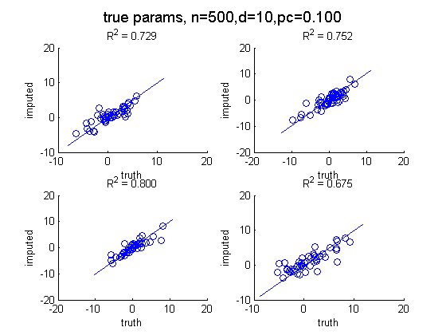
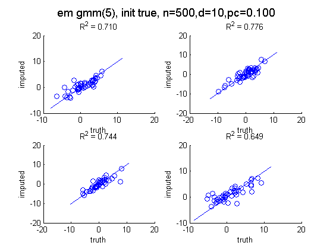
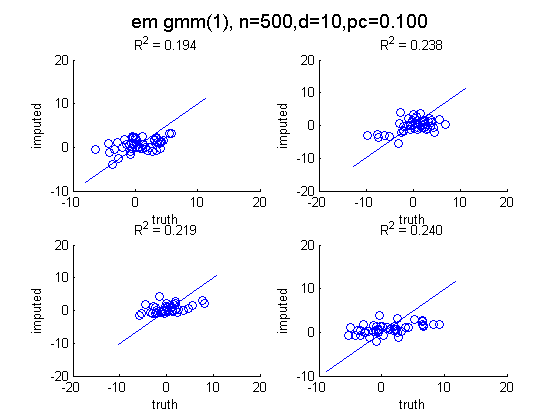
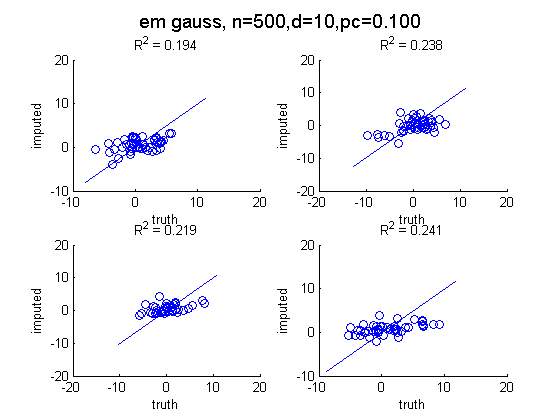
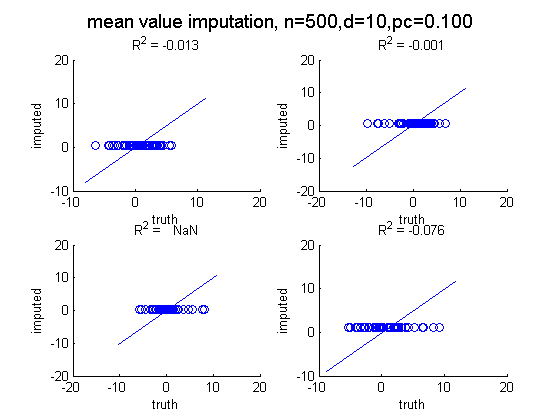

Imputation for a mixture of Gaussians
PMTKneedsStatsToolbox regstats
Contents
% This file is from pmtk3.googlecode.com function mixGaussImputationDemo()
requireStatsToolbox
Make data
setSeed(1); %d = 10; n = 100; pc = 0.5; d = 10; n = 500; pc = 0.1; K = 5; mu = rand(d,K); mixweight = normalize(rand(1,K)); Sigma = zeros(d,d,K); for k=1:K Sigma(:,:,k) = randpd(d); end trueModel = struct('K', K, 'mu', mu, 'Sigma', Sigma, 'mixweight', mixweight); [Xfull] = mixGaussSample(mu, Sigma, mixweight, n); missing = rand(n,d) < pc; Xmiss = Xfull; Xmiss(missing) = NaN;
Impute
% GMM % initialize with true params to see if it helps [modelKinitTrue] = mixGaussMissingFitEm(Xmiss, K, ... 'mu0', trueModel.mu, 'Sigma0', trueModel.Sigma, 'mixweight0', trueModel.mixweight); [XimputeEMKinitTrue] = mixGaussImpute(modelKinitTrue, Xmiss); [modelK] = mixGaussMissingFitEm(Xmiss, K); [XimputeEMK] = mixGaussImpute(modelK, Xmiss); % Check that a mixture of 1 Gaussian is equivalent to a single Gaussian [model1] = mixGaussMissingFitEm(Xmiss, 1); [XimputeEM1] = mixGaussImpute(model1, Xmiss); [modelG] = gaussMissingFitEm(Xmiss); [XimputeEMG] = gaussImpute(modelG, Xmiss); % Oracle [XimputeTruth] = mixGaussImpute(trueModel, Xmiss); % Heuristic [XimputeMV, mu] = meanValueImputation(Xmiss); % Scatter plots doPlot(Xmiss, Xfull, XimputeTruth, 'true params', 'gmmImputeScatterTruth', n, d, pc) doPlot(Xmiss, Xfull, XimputeEMKinitTrue, sprintf('em gmm(%d), init true',K), ... 'gmmImputeScatterEmKinitTrue', n, d, pc) doPlot(Xmiss, Xfull, XimputeEMK, sprintf('em gmm(%d)',K), 'gmmImputeScatterEmKInitRnd', n, d, pc) doPlot(Xmiss, Xfull, XimputeEM1, 'em gmm(1)', 'gmmImputeScatterEm1', n, d, pc) doPlot(Xmiss, Xfull, XimputeEMG, 'em gauss', 'gmmImputeScatterEmG', n, d, pc) doPlot(Xmiss, Xfull, XimputeMV, 'mean value imputation', 'gmmImputeScatterMV', n, d, pc)    
end function doPlot(Xmiss, Xfull, Ximpute, ttl, fname, n, d, pc) figure; nr = 2; nc = 2; for j=1:(nr*nc) subplot(nr, nc, j); miss = find(isnan(Xmiss(:,j))); scatter(Xfull(miss, j), Ximpute(miss,j)) xlabel('truth'); ylabel('imputed'); mini = min(Xfull(:,j)); maxi = max(Xfull(:,j)); line([mini maxi], [mini maxi]); %axis square %grid on stats = regstats(Xfull(miss,j), Ximpute(miss,j)); r = stats.rsquare; title(sprintf('R^2 = %5.3f', r)) end suptitle(sprintf('%s, n=%d,d=%d,pc=%5.3f', ttl, n, d, pc)) printPmtkFigure(sprintf('%s,n%dn%dpc%d', fname, n, d, round(100*pc))) end